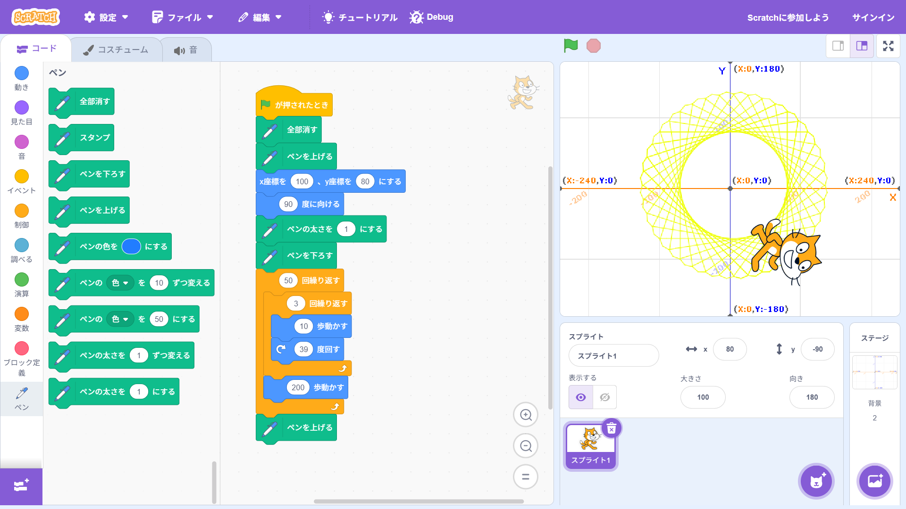
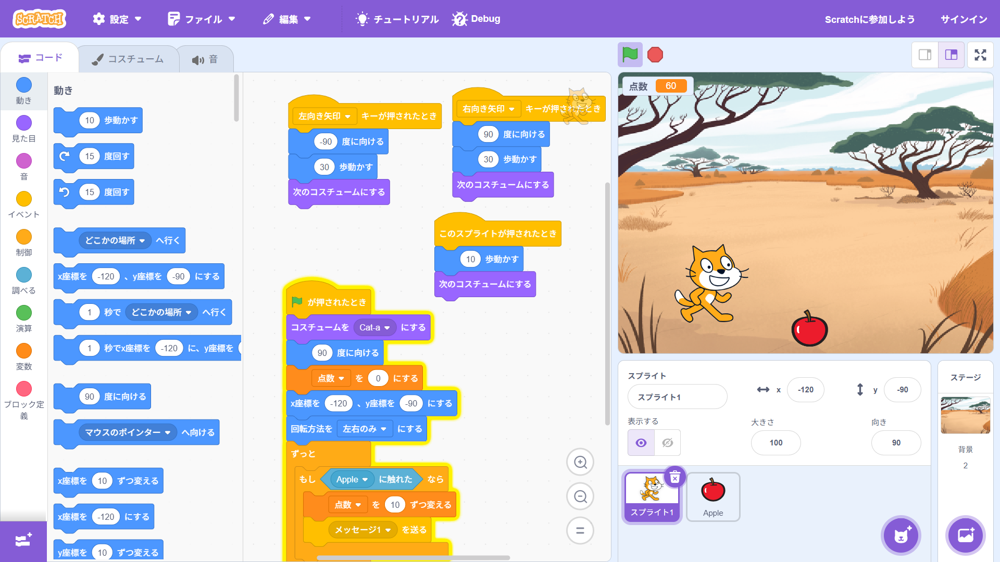

1週目のレポート ： 公大高専１年実習I-1
3b班26番 tamon
第1週目
1-1 サイエンスアート

1.内容
scratchを使って、図形を描く。
ペンの拡張機能や動きを工夫して変なものを描く。
2.感想
scratchはほんの少しだけ触ったことがありましたが、ペン機能を使ったのは初めてなので何かと新鮮でした。
ペンはわかりやすくつかいやすいので、好き勝手遊びやすく、楽しく使えました。
1-2 ゲーム

1.内容
scratchを使って簡単なゲームを作る。
内容は落ちてくるリンゴを取ると点数がもらえるゲーム。
2.感想
このような割としっかりしたゲームを作るのは初めてだったのですが、
思っていたより簡単に制作出来て、ゲームを作るというハードルが自分の中で少し下がった気がしました。
1-3 ホームページ作成
私のホームページ
1.内容
githubを使って自分のホームページを作成する。
内容やリンクを少し書き換えたりする。
2.感想
githubは見たことも聞いたこともなくて、初めて触ったのですが、
自分のホームページを作れて、さらにそれが簡単に全世界へ発信されているというのが少し怖くもワクワクしました。
各ページへのリンク
1週目のレポート
2週目のレポート
3週目のレポート
私のホームページ